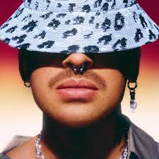

Juhász Márton, művésznevén Dzsúdló magyar pop/trap előadó, dalszövegíró.
2019-ben robbant be a köztudatba szókimondó, önreflexív dalaival.
Ez egy Dzsúdló.
1. bekezdés
Albumok
2. bekezdés
Dalok
3. bekezdés
Néhány link
További tudnivalók DÍVA Egyszerű Budapestpark koncert| Dal | Év |
|---|---|
| Várnék | 2022 |
| Kelet | 2024 |
| Hiszti | 2020 |